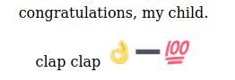
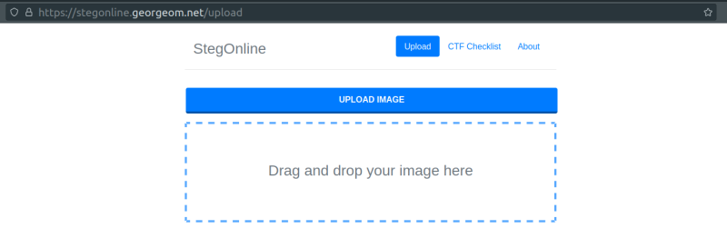
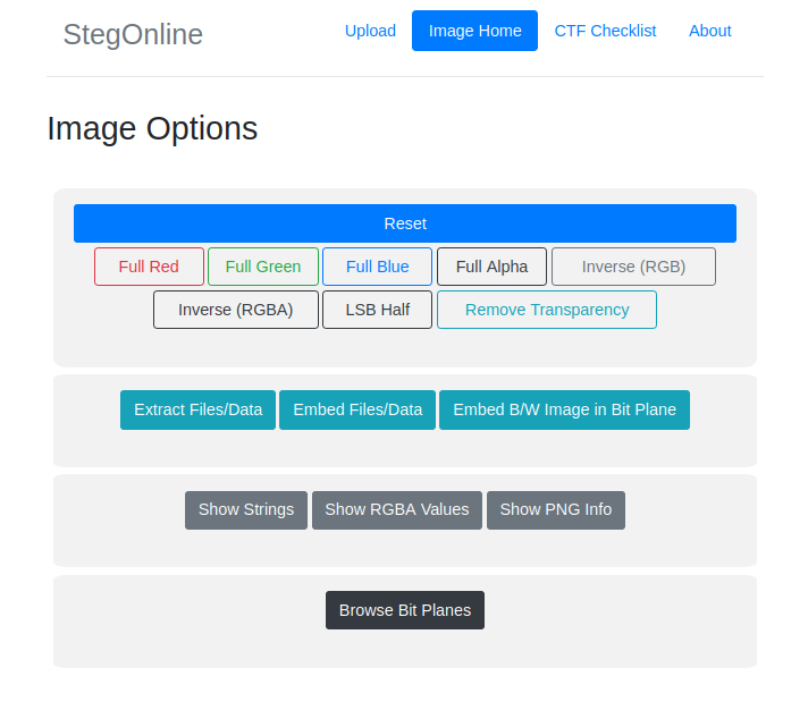
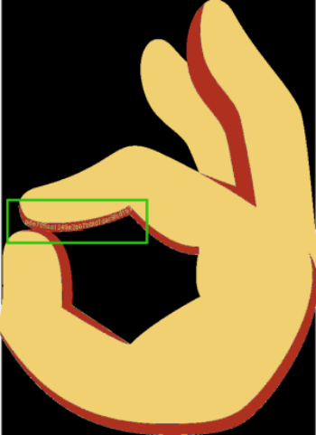
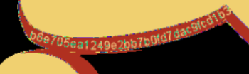

3.2 Steganography
Steganography is the practice of concealing a message within another message or a physical object. In computing/electronic contexts, a computer file, message, image, or video is concealed within another file, message, image, or video.
On the web page there are three small images.

This image is tricky. You'll find a hash value on the “hand” image and then you have to substrat 100 to the value.
1. Download the following.
2. Navigate to https://stegonline.georgeom.net/image and drag your image there.


3. Click on the “LSB Half” burron.
4. Scroll down and you'll see the image.

6. If you make zoom you'll a string of characters.

“b6e705ea1249e2bb7b0fd7dac9fcd1b3”
7. Substrat 100 to the value.
1b3 - 100 = 0b3
So, the hash will be “b6e705ea1249e2bb7b0fd7dac9fcd0b3”. It's a “raw-md5” hash.